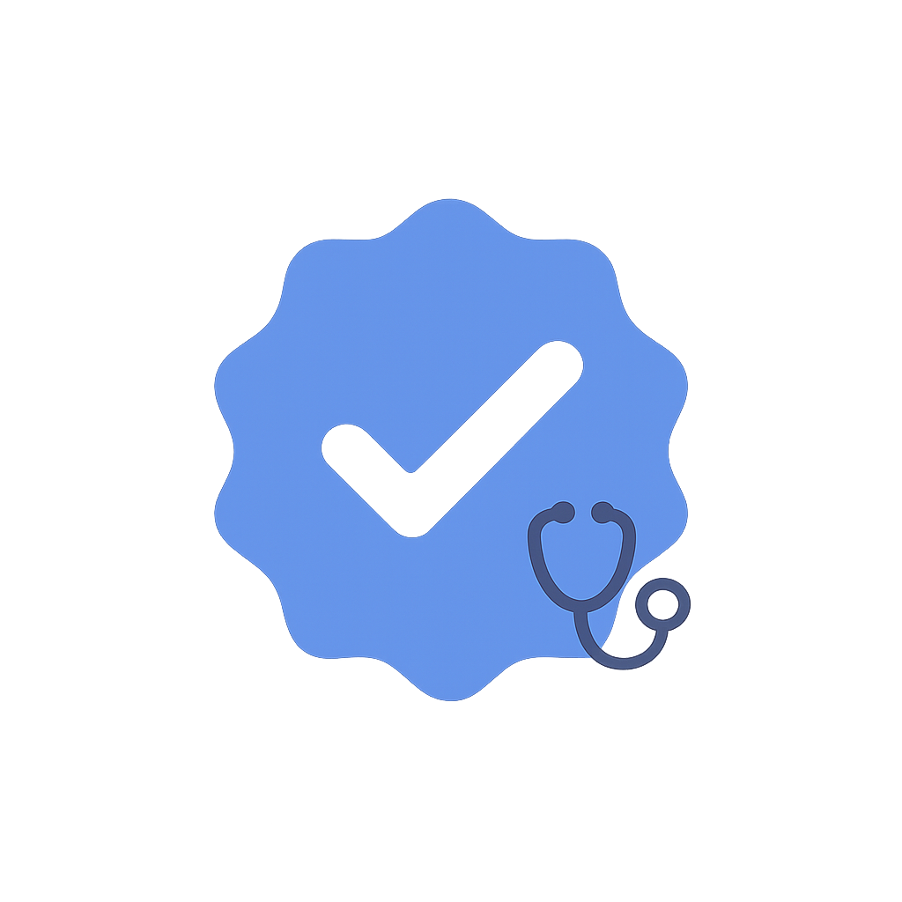

Faciliter l’habillage Certifiée par un médecin 
Les vêtements à fermetures aimantées réduisent le temps et l’effort nécessaires pour s’habiller, tout en préservant l’autonomie ; j’ai également remarqué que les chemises aimantées se lavent très bien en machine sans perdre leur pouvoir d’adhérence, ce qui simplifie l’entretien à long terme pour les aidants.

Stabiliser le tremblement lors des repas
Placez une bande antidérapante sous l’assiette et utilisez des couverts un peu plus lourds ; l’inertie supplémentaire réduit les tremblements.
Appli de rappels de médication
L’application Medisafe envoie des rappels personnalisés et suit l’adhésion au traitement, ce qui permet de mieux comprendre la façon dont les prises se répartissent sur la journée et d’identifier des oublis récurrents…